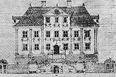
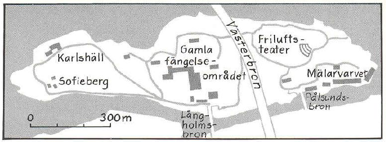
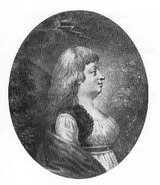
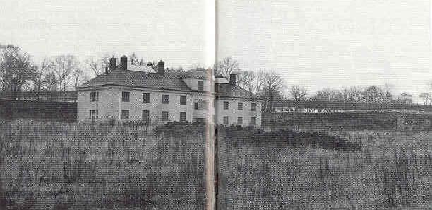
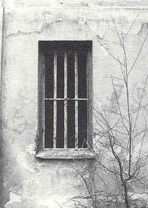
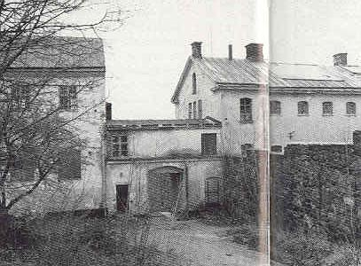

Södermalm i tid och rum
Ur Sällsamheter i Stockholm. Innerstaden, Åsa Nordén, 1999 Spinnhuset
|
 
|
Långholmsbron*, även kallad "Suckarnas Bro", leder direkt till det f d fängelseområdet på
Långholmen. Alldeles vid anstaltsingången finns en reliefkarta över fängelsets och öns byggnader.
En av de tidigare fängelsebyggnaderna, "Spinnhuset", är ett monumentalt hus som reser sig ett
stycke till vänster innanför entren. På mellersta delen av norra gaveln till detta hus är muren
försedd med kryssformade ankarjärn och en dörr med vacker portalinramning. Denna del av
husfasaden tillhörde en gång den ståtliga 1600-talsmalmgården Alstavik. Huset hade på sin tid
höga halvkolonner, skulptural blomsterdekor på fasaden och en stor fritrappa.
|
* Långholmsbron, byggd 1931, är den ena (den västra) av två broar som förbinder ön och stadsdelen Långholmen med Södermalm. Den andra bron (den östra) är Pålsundsbron, byggd 1947. Mellan dem och högt ovanför Långholmens trädtoppar välver sig Västerbron, invigd 1935.

År 1724 sålde Ahlstedts ättlingar Alstaviksegendomen till kronan i form av kommerskollegium som avsåg att där inrätta ett rasp- och spinnhus. Därmed inleddes Långholmens 250-åriga fängelsehistoria. Vid slutet av augusti 1975 flyttades de sista 140 internerna ifrån Långholmsfängelset.
I en myndighetspublikation från 1724 anges vilken sorts klientel som skall placeras på den nya inrättningen: "Alla lättingar och tjänstlösa personer, jämväl alla lösa kvinnspersoner ... skola genom stadens betjänte bliva upptagna och föras till Rasp- och spinnhuset att brukas till det där förordnade arbete. . . "
Institutionens officiella namn, Rasp- och spinnhuset, kom sig av att det var meningen att de intagna männen skulle ägna sig åt att raspa bresiljeträ* och de intagna kvinnorna åt att karda och spinna ull. Behovet av yllegarn var stort vid de många klädesfabrikerna som etablerades i frihetstidens (1719-1772) Sverige. Under de många krigsåren - "stora nordiska kriget" varade 1700-1721 - hade militärens uniformer slitits ut och klädesfabrikerna fick stora beställningar av armen. Tvångsarbetsanstalten på Långholmen kom att kallas enbart Spinnhuset eftersom framställandet av garn blev den dominerande sysselsättningen. Det tycks alltså inte enbart ha varit behovet att ta hand om tiggare och lösdrivare som låg bakom tillkomsten av Spinnhuset utan snarare behovet att förse textilfabrikerna med klädesgarn.
* Bresiljeträ innehåller ett färgämne som användes för färgning av garn, vävnader m m.
Spånad av klädesull var ett mycket dåligt betalt arbete för fria
spinnerskor och därför en föga eftertraktad sysselsättning.* Spinnhushjonens tvångsarbete skulle därför bli till god hjälp för att lösa den prekära
bristen på arbetskraft för manufakturverken. Spinnhuset mottog sina första arrestanter den 8
september 1724. De tre första Långholmsfangarna hette Helena Larsdotter, Stina Dansdotter
Löfling och Catharina Mårtensdotter.
* Per Anders Fogelström ger i sin roman "Vävarnas barn" (1981) en levande och inträngande
skildring av förhållandena under 1700-talet på den stockholmska klädesfabriken Barnängen.
Det var inte enbart lättingar och lösa kvinnor som spärrades in på Spinnhuset. Efter att Spinnhuset hade varit i verksamhet omkring femton år konstaterar dess dåvarande inspektor att anstalten under de gångna åren huvudsakligen befolkats med fem kategorier: lösa kvinnspersoner som förlupit sin tjänst, gamla och bräckliga tiggare, soldat- och båtsmansbarn (9-12 år) som tiggt på gatorna, gamla hustrur "som med fylleri, svordom och slagsmål icke allenast förslösat sin egendom utan ock bedrivit otukt, rofferi och stöld" och slutligen kvinnor som dömts för grövre brott till kroppsstraff och därefter spinnhusvistelse.
Arbetsdagen var oändligt lång på Spinnhuset. Enligt uppgifter i en skrivelse från 1734 väcktes de intagna alla vardagar, såväl sommar som vinter, kl 4.00 om morgonen; arbetet började kl 5.00 och pågick till kl 7.00, 8.00 och 9.00 på kvällen, beroende på hur mycket fången hunnit utföra av det förelagda dagsarbetet.
Om de svåra förhållanden som rådde på Spinnhuset vittnar bl a den sydamerikanske frihetshjälten och diplomaten Francisco de Miranda som 1787 reste i Sverige och Norge. I sin dagbok skildrar han en färd till Räkneholmen (Reimersholme) och Långholmen som han gjorde tillsammans med den kände målaren Elias Martin. Efter att ha besett Räkneholmen fortsätter Miranda och Martin till
"... Långholmen (Lang-holme) ... för att bese arbets- och korrektionsinrättningarna (Spinnhuset) ... Förmannens hustru gav en man i uppdrag att följa med oss till de olika kvarteren, där vi sågo mycket folk av alla åldrar, nästan nakna och dåligt underhållna och några smutsiga byggnader utan sovmöjligheter. Man följde efter oss och tiggde en allmosa m.m. Några arbetade, andra inte, så att det hela gav intryck av oordning och misär i alla avseenden. Man gav oss den upplysningen, att man för närvarande hade 20 män och 175 kvinnor, av vilka 35 hade fördrivit sin livsfrukt. Då vi gingo förbi, pekade vår följeslagare på en flicka på 15 år, vilken hade tyckt om handjur, och jag märkte att hon skämdes, och för att hon icke skulle lida detta för min skull, gav jag henne några småslantar, vilket livade upp henne, inte så mycket för slanten som sådan, utan för att hon på detta sätt fick veta att jag inte föraktade henne. Detta är en den nuvarande kungens inrättning och avsedd för 250 personer, och jag skulle önska att en så bra sak blev bättre skött. Vi gingo in i kyrkan, som är bättre och snyggare, och avreste med vår båt mot staden njutande av de vackra och skiftande vyerna, vilka min vän Martin gjorde mig uppmärksam på, och visade utmärkta förutsättningar härvidlag."
|
En berömd Spinnhusfange var den adliga hovdamen Magdalena Rudenschöld som anklagades för påstådda stämplingar mot Gustav IV Adolfs förmyndarregering. Magdalena Rudenschöld var förälskad i kvinnotjusaren, hovmannen, politikern Gustav Mauritz Armfelt som beskylldes för att ha planerat en sammansvärjning mot regeringen. Magdalena Rudenschöld dömdes till döden för delaktighet i Armfelts förräderi, men benådades till en timmes schavottering och livstids spinnhusvistelse. Den 23 september 1794 tvingades hon bestiga schavotten beskådad av stora människomassor. Efter en stund svimmade hon och bars bort från skampålen för att föras till Spinnhuset. I sin självbiografi berättar Magdalena Rudenschöld om ankomsten till Spinnhuset: |
 |
"Man satte mig i en hyrvagn, omgifven af stadsvakter. jag förblev sanslös hela vägen till spinnhuset, ett stycke utom Hornstull, och öppnade ej mina ögon förrän på eftermiddagen, då jag fann mig helt allena, liggande på golfvet i en mörk arrest med en vattenskål och ett glas vin bredvid mig. Ännu hade jag ingenting smakat på hela dygnet. Då jag tog i vinglaset hörde jag skrik: 'hon lefver ännu'. Jag såg upp till fönstret och fann där utanför uppstaplade alla spinnhushjonen, som betraktade mig. Jag ville då stiga upp och flytta mig i en vrå undan deras åsyn, men fann mig oförmögen att stå på mina fötter, och återföll tillbaka på golfvet."
Magdalena Rudenschöld behövde bara sitta två år i Spinnhuset trots att hon dömts till livstid. Hennes villkor där skilde sig i hög grad från det vanliga Spinnhusklientelets. Hon var endast ådömd förlust av friheten och hade inte arbetsplikt. Hon fick ha egen kost, egna möbler och egna tjänare. Två rum med kök tapetserades och möblerades särskilt för hennes räkning. Rummen hade utsikt mot trädgård och vatten och hade ingång åtskild från arresthuset.
De som skulle föra hjonen till Spinnhuset tillhörde den s k separationsvakten. Denna kår, vars medlemmar kallades paltar i folkmun, hade uppsatts 1722 av kasserat folk ur den egentliga stadsvakten. Paltarna nyttjades för sysslor som inte anstod stadsvakten, t ex bevakning av tukthusfångar som arbetade med gaturenhållningen och fasttagande av tiggare och lösdriverskor. De försågs fr o m 1725 med blåa uniformer med gula uppslag och gula strumpor. Paltarna var inte populära. Carl Michael Bellman hade ett särskilt gott öga till dem och beskriver dem elakt vid flera tillfällen. T ex i En stuf rim:
"Den liusblå Arméen
Med krokiga ben,
med rostiga plitar
i Spinhus alléen,
På den jag eij litar;
jag sielf i små bitar
trancherat Captaine.
Natten mellan den 12 och 13 juli 1827 överfördes samtliga kvinnliga fångar från Spinnhuset på Långholmen till en ny kvinnoanstalt på Norrmalm intill nuvarande Norra Bantorget. Transporten, som myndigheterna försökte ordna så diskret som möjligt, skildras av Stockholms Posten den 18 juli 1827:
"Flyttningen af de gwinnliga fångarna från korrektionshuset å Långholmen till det för dem inrättade fängelse wid den fordna buldansfabriken, bredwid Smedjegårdshuset, egde rum natten emellan Fredagen och Lördagen förliden vecka. Transporten af nära 300 fångar öfwer den icke obetydliga sträcka, som skiljer dessa båda ställen åt, och i en stad, der en stor del af populationen, dels har det okynne att söka wåldföra, eller gäcka den svagare, så snart det kan ske utan wåda - och hwartill en hwar som besöker Stockholms gator efter skymningen beständigt kan få se prof -, dels har den missledda wälwilja, som ömkar och skulle wilja hjelpa hwar och en lidande, utan undersökning om ej dess öde är både förtjent och nödwändigt för den allmänna säkerheten: en sådan transport war werkligen ingen lätt sak. Genom goda anstalter, kloka försigtighetsmått och en noggrann tillsyn, lyckades det likwäl att föra den wådliga frakten till sitt bestämda rum, utan att någon af fångarna undkom. Ehuru man sökte iakttaga den största hemlighet i anseende till tiden när flyttningen skulle ske, ehuru den gjordes sjöledes, och först efter midnatten, war likwäl en betydlig mängd åskådare i rörelse. Det påstås till och med att några personer, som icke syntes tillhöra de lägsta folkklasserna, i en båt sökte göra oreda bland transportsluparna, och äfwen så wida lyckades i sitt onda uppsåt, att några af dem stötte på grund i Clara sjö, samt att de allwarsammaste hotelser erfordrades för att förmå dem att avlägsna sig. - Illa nog, att denna kittsliga skadefröjd skall träffas bland en population, eljest så utmärkt för sin stilla, fogliga laglydnad som Stockholms inwånare."
I och med att kvinnorna som utgjorde det egentliga Spinnhusklientelet försvann från Långholmsanstalten var Spinnhusepoken slut. Inrättningen på Långholmen tog därefter enbart emot män som hade gjort sig skyldiga till brott. Cirka 100 år senare öppnades emellertid en liten cellavdelning för kvinnor på Långholmens kronohäkte.
De flesta av Långholmens gamla fängelsebyggnader har bevarats och renoverats. De nyttjas idag till olika ändamål, t ex som hotell, vandrarhem, konferensanläggning, värdshus, folkhögskola. En cell har bevarats i ursprungligt skick som ett minne av vad som varit.. Fängelsemuren som fångarna själva uppfört står också kvar.

|
 |
 |